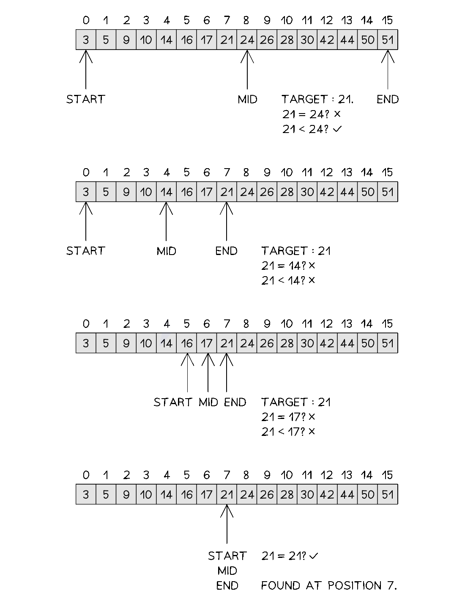

AP Exam Weight 30–35% · 3.1–3.18 class periods · 18 topics + Robot
Big Idea 3 — Algorithms and Programming (AAP): Review Notes
Syllabus: AP Computer Science Principles — Course and Exam Description, Effective Fall 2020 Exam Weight: 30–35% of AP Exam (largest big idea) Topics: 3.1–3.18 AP Classroom: Topic Questions ~90 multiple-choice; ~20 performance task prompts
Overview
Big Idea 3 is the largest and most heavily weighted big idea on the AP CSP exam, covering the fundamental building blocks of programming. You will learn how data is stored using variables, lists, and strings; how algorithms are expressed using sequencing, selection, and iteration; and how the exact pseudocode from the AP Exam Reference Sheet is used to write and trace code segments. You will write and evaluate conditionals and loops, traverse lists, develop procedures that use parameters and return values, generate random values, and build simulations. The big idea closes with two of the most conceptually important topics: algorithmic efficiency (the difference between algorithms that run in reasonable and unreasonable time) and undecidable problems (problems for which no algorithm can ever produce a correct yes-or-no answer for all inputs).
In this big idea you will learn to:
Represent a value with a variable, and determine the value of a variable as a result of an assignment
Represent lists and strings using variables, and use data abstraction to manage complexity in programs
Express and evaluate expressions that use arithmetic operators, strings, relational operators, and logical operators
Write and determine the result of conditional statements, nested conditional statements, and iteration statements
Create algorithms from an idea, by combining existing algorithms, or by modifying existing algorithms
Use list indexing and list procedures, and write and trace algorithms that traverse lists
Determine the number of iterations required for a binary search and explain the requirements needed to complete one
Write statements to call procedures and determine the result or effect of a procedure call
Explain how procedural abstraction and libraries manage complexity in programs, and select appropriate libraries or existing code
Write and evaluate expressions that generate random values
Explain how simulations represent real-world phenomena and compare simulations with real-world contexts
Explain the difference between algorithms that run in reasonable time and those that do not, and identify situations where a heuristic solution may be more appropriate
Explain the existence of undecidable problems in computer science
💡 Exam Tip
Hand-trace code on paper. The single most important skill in this big idea is “determine the result of code segments” (Skill 4.B). After every line, write down each variable’s current value, updating your trace as assignments, conditionals, and loops execute. Most of the ~90 Topic Questions ask exactly this.
Memorize the Exam Reference Sheet pseudocode syntax cold. Lists are 1-indexed (aList[1] is the first element, and an index less than 1 or greater than LENGTH(aList) causes an error); MOD has the same precedence as * and /; REPEAT UNTIL(condition) checks the condition before each run, so the loop body can execute zero times; RANDOM(a, b) is inclusive on both ends; DISPLAY(expression) displays the value followed by a space.
Binary search requires sorted data, and it works by elimination, not by checking every element. At each step it examines the middle of the remaining data and eliminates half of it, needing only about log₂(n) comparisons for n elements, whereas a linear (sequential) search may need all n.
Efficiency questions use categories, not Big-O. Classify informally: polynomial efficiency or lower (constant, linear, square, cube, …) runs in reasonable time; exponential or factorial efficiencies run in unreasonable time. Also know the distinction between decidable problems, undecidable problems, and heuristics (approximate solutions that are not guaranteed to be optimal).
Topic 3.1 — Variables and Assignments
Key Concepts
Learning Objective [AAP-1.A] — Represent a value with a variable.
[AAP-1.A.1]: A variable is an abstraction inside a program that can hold a value. Each variable has associated data storage that represents one value at a time, but that value can be a list or other collection that in turn contains multiple values.
[AAP-1.A.2]: Using meaningful variable names helps with the readability of program code and understanding of what values are represented by the variables.
[AAP-1.A.3]: Some programming languages provide types to represent data, which are referenced using variables. These types include numbers, Booleans, lists, and strings.
[AAP-1.A.4]: Some values are better suited to representation using one type of datum rather than another.
Learning Objective [AAP-1.B] — Determine the value of a variable as a result of an assignment.
确定一次赋值（assignment）后变量的值。核心概念：赋值运算符（←）允许程序改变变量所代表的值，先求右侧表达式的值再把结果副本存入变量；变量中保存的总是最近一次被赋的值，例如 a ← 1; b ← a; a ← 2 之后 b 仍为 1。
[AAP-1.B.1]: The assignment operator allows a program to change the value represented by a variable.
[AAP-1.B.2]: The exam reference sheet provides the “←” operator to use for assignment. For example, a ← expression evaluates expression and then assigns a copy of the result to the variable a.
[AAP-1.B.3]: The value stored in a variable will be the most recent value assigned. For example:
[3.1-Ext1]: Swapping the values of two variables requires a third temporary variable: temp ← a, then a ← b, then b ← temp. Without the temporary variable, one value would be overwritten and lost.
[3.1-Ext2]: A three-value rotation (cyclic shift) moves each value to the next variable, e.g., word1 → word2 → word3 → word1. Save the last value in a temporary variable first, then chain the assignments in reverse order: temp ← word3; word3 ← word2; word2 ← word1; word1 ← temp.
Example Code
// Topic 3.1 — Variables and Assignments
// A variable is an abstraction that holds one value at a time.
score ← 0 // assign the number 0 to score
name ← "Ada" // assign a string to name
isStudent ← true // assign a Boolean value to isStudent
score ← score + 10 // evaluate the right side (0 + 10), then store 10
DISPLAY(score) // displays 10
// The value stored is always the MOST RECENT value assigned.
// Assignment stores a copy, so later changes to the source do not matter.
a ← 1
b ← a // b gets a copy of a's value (b = 1)
a ← 2 // a is reassigned; b is unchanged
DISPLAY(b) // still displays 1
// Topic 3.1 (Quiz Supplement) — Swap and rotation patterns.
// Swap two values using a temporary variable:
a ← 3
b ← 5
temp ← a // temp = 3 (save a's value before it is overwritten)
a ← b // a = 5
b ← temp // b = 3 (restore the saved value into b)
DISPLAY(a) // displays 5
DISPLAY(b) // displays 3
// Three-value rotation (cyclic shift): word1 -> word2 -> word3 -> word1
w1 ← "A"
w2 ← "B"
w3 ← "C"
temp ← w3 // save the last value
w3 ← w2 // "B" moves into w3
w2 ← w1 // "A" moves into w2
w1 ← temp // "C" moves into w1
// Result: w1 = "C", w2 = "A", w3 = "B"
✏️ Exercise 3.1.1 — Tracing Assignments (6 marks)
Trace the following code segment and answer the questions below.
x ← 5
y ← x + 2
x ← y
y ← 10
(a) What is the value of y immediately after the statement y ← x + 2? [1]
(b) What is the value of x after the statement x ← y? [1]
(e) The assignment operator evaluates the expression on the right and assigns a copy of the result to the variable on the left. When b ← a runs, a copy of a’s current value (1) is stored in b; the later reassignment a ← 2 does not affect that stored copy. [1]
✏️ Exercise 3.1.2 — Assignment and the "Most Recent Value" Rule (4 marks)
Consider the following code segment.
count ← 3
count ← count + 1
count ← count * 2
(a) State the value of count after each of the three statements. [3]
(b) Which essential knowledge statement tells us the stored value in a variable is the most recent value assigned? State it in your own words. [1]
📖 参考答案 | Reference Answer
(a) After count ← 3: 3; after count ← count + 1: 4; after count ← count * 2: 8. Each statement evaluates the expression using the current value and then stores the new value. [3]
(b) The value stored in a variable will be the most recent value assigned (AAP-1.B.3): every assignment overwrites whatever was stored before, so the variable ends with the value from the last assignment that executed. [1]
✏️ Exercise 3.1.3 — Variable Names and Types (5 marks)
(a) Why does using meaningful variable names help when writing and reading program code? [1]
(b) List four types of data that programming languages use to represent values, as referenced by variables. [2]
(ii) The average of a set of test scores, such as 87.5.
📖 参考答案 | Reference Answer
(a) Meaningful variable names help with the readability of program code and understanding of what values are represented by the variables (AAP-1.A.2). [1]
(b) Numbers, Booleans, lists, and strings (AAP-1.A.3). [2]
First save a’s value (7) in temp; then a can safely be overwritten with 12; finally b receives the saved 7. [3]
(b) After a ← b, a is 12 and b is 12 — the original value of a (7) has been overwritten and is lost, so the next step b ← a would just copy 12 again. The temporary variable preserves the value that would otherwise be destroyed. [2]
A program has three string variables word1 ← "cat", word2 ← "dog", and word3 ← "owl", and wants to rotate them so that word1 gets word3’s old value, word2 gets word1’s old value, and word3 gets word2’s old value (a cyclic shift).
(a) Write the assignments (using a temp variable) that perform the rotation. [3]
(b) State the final values of word1, word2, and word3. [1]
Save the last variable’s value first, then chain the assignments in reverse order so that no value is overwritten before it has been copied onward. [3]
[AAP-1.C.1]: A list is an ordered sequence of elements. For example, [value1, value2, value3, ...] describes a list where value1 is the first element, value2 is the second element, value3 is the third element, and so on.
[AAP-1.C.2]: An element is an individual value in a list that is assigned a unique index.
[AAP-1.C.3]: An index is a common method for referencing the elements in a list or string using natural numbers.
[AAP-1.C.4]: A string is an ordered sequence of characters.
Learning Objective [AAP-1.D] — For data abstraction: a. Develop data abstraction using lists to store multiple elements. b. Explain how the use of data abstraction manages complexity in program code.
[AAP-1.D.1]: Data abstraction provides a separation between the abstract properties of a data type and the concrete details of its representation.
[AAP-1.D.2]: Data abstractions manage complexity in programs by giving a collection of data a name without referencing the specific details of the representation.
[AAP-1.D.3]: Data abstractions can be created using lists.
[AAP-1.D.4]: Developing a data abstraction to implement in a program can result in a program that is easier to develop and maintain.
[AAP-1.D.5]: Data abstractions often contain different types of elements.
[AAP-1.D.6]: The use of lists allows multiple related items to be treated as a single value. Lists are referred to by different names, such as array, depending on the programming language.
⚠️ EXCLUSION STATEMENT (EK AAP-1.D.6): The use of linked lists is outside the scope of this course and the AP Exam.
[AAP-1.D.7]: The exam reference sheet provides the notation [value1, value2, value3, ...] to create a list with those values as the first, second, third, and so on items. aList ← [] creates a new empty list and assigns it to aList. aList ← bList assigns a copy of the list bList to the list aList.
[AAP-1.D.8]: The exam reference sheet describes a list structure whose index values are 1 through the number of elements in the list, inclusive. For all list operations, if a list index is less than 1 or greater than the length of the list, an error message is produced and the program will terminate.
Example Code
// Topic 3.2 — Data Abstraction
// A list stores multiple related items as a single value (one variable).
scores ← [85, 92, 78] // list literal; 85 is element 1, 92 is element 2
scores[1] // 85 (the FIRST element is at index 1)
firstScore ← scores[1] // 85
scores[1] ← 90 // change element 1: scores is now [90, 92, 78]
// Data abstraction: name a collection of data without referencing
// the details of its representation.
allStudents ← ["Ava", "Ben", "Cara"]
empty ← [] // a new empty list
copy ← allStudents // assigns a COPY of the list
DISPLAY(LENGTH(copy)) // displays 3
// A list index less than 1 or greater than the length causes an error
// and the program terminates.
// DISPLAY(scores[0]) -- ERROR: valid indices are 1 through 3
✏️ Exercise 3.2.1 — List Fundamentals (5 marks)
A program contains the list nums ← [10, 20, 30, 40].
(d) An error message is produced and the program will terminate — index 5 is greater than the length of the list. [1]
(e) x ← nums[1] — this assigns the value of nums[1] (which is 10) to the variable x. [1]
✏️ Exercise 3.2.2 — How Data Abstraction Manages Complexity (4 marks)
A school needs to store the names of every student in a grade.
(a) Explain how storing the names in a single list, rather than in many separate variables, is an example of data abstraction. [2]
(b) State two benefits of using a data abstraction (such as a list) when developing and maintaining a program. [2]
📖 参考答案 | Reference Answer
(a) The list gives a collection of data a name (one variable) without referencing the specific details of the representation — multiple related items are treated as a single value (AAP-1.D.2, AAP-1.D.6). The program can refer to the whole collection as one thing instead of naming each student separately. [2]
(b) Example benefits: the program is easier to develop and maintain (AAP-1.D.4); the collection can be processed with a single traversal algorithm; the list can be passed to a procedure as one value; the same algorithm works no matter how many students there are. Any two of these are accepted. [2]
✏️ Exercise 3.2.3 — List Errors and Copies (3 marks)
Consider the code segment below.
listA ← [1, 2, 3]
listB ← listA
listB[1] ← 99
(a) What is LENGTH(listA)? [1]
(b) What happens when the program runs DISPLAY(listA[3])? [1]
(b) It displays 3 — index 3 is valid (it is not less than 1 and not greater than the length). (An error would occur only for an index less than 1 or greater than the length.) [1]
✏️ Exercise 3.2.4 — Abstraction of Types and Names (4 marks)
(a) A list is an ordered sequence of elements. What is a string, and how is it similar to a list? [2]
(b) Data abstractions often contain different types of elements. Give an example of a list that contains more than one type of data, and state what each element represents. [1]
(a) A string is an ordered sequence of characters (AAP-1.C.4). Like a list, its elements (characters) can be referenced using an index — an index is a common method for referencing the elements in a list or string using natural numbers (AAP-1.C.3). [2]
(b) Example: player ← ["Maya", 16, true] — the first element is a string (name), the second is a number (age), and the third is a Boolean (e.g., whether the player is active). Any example with mixed types is accepted. [1]
[AAP-2.A.1]: An algorithm is a finite set of instructions that accomplish a specific task.
[AAP-2.A.2]: Beyond visual and textual programming languages, algorithms can be expressed in a variety of ways, such as natural language, diagrams, and pseudocode.
[AAP-2.A.3]: Algorithms executed by programs are implemented using programming languages.
[AAP-2.A.4]: Every algorithm can be constructed using combinations of sequencing, selection, and iteration.
Learning Objective [AAP-2.B] — Represent a step-by-step algorithmic process using sequential code statements.
[AAP-2.B.1]: Sequencing is the application of each step of an algorithm in the order in which the code statements are given.
[AAP-2.B.2]: A code statement is a part of program code that expresses an action to be carried out.
[AAP-2.B.3]: An expression can consist of a value, a variable, an operator, or a procedure call that returns a value.
[AAP-2.B.4]: Expressions are evaluated to produce a single value.
[AAP-2.B.5]: The evaluation of expressions follows a set order of operations defined by the programming language.
[AAP-2.B.6]: Sequential statements execute in the order they appear in the code segment.
[AAP-2.B.7]: Clarity and readability are important considerations when expressing an algorithm in a programming language.
Learning Objective [AAP-2.C] — Evaluate expressions that use arithmetic operators.
求值使用算术运算符（arithmetic operators）的表达式。核心概念：算术运算符包括加（+）、减（−）、乘（*）、除（/）和取模（MOD，求余数），例如 17 MOD 5 的值为 2；MOD 与 *、/ 具有相同的优先级，运算顺序遵循数学规则（括号优先）。
[AAP-2.C.1]: Arithmetic operators are part of most programming languages and include addition, subtraction, multiplication, division, and modulus operators.
[AAP-2.C.2]: The exam reference sheet provides a MOD b, which evaluates to the remainder when a is divided by b. Assume that a is an integer greater than or equal to 0 and b is an integer greater than 0. For example, 17 MOD 5 evaluates to 2.
[AAP-2.C.3]: The exam reference sheet provides the arithmetic operators +, -, *, /, and MOD: a + b, a – b, a * b, a / b, a MOD b. These are used to perform arithmetic on a and b. For example, 17 / 5 evaluates to 3.4.
[AAP-2.C.4]: The order of operations used in mathematics applies when evaluating expressions. The MOD operator has the same precedence as the * and / operators.
Quiz Supplement — Absolute Value and Integer Quotient (Progress Check Quiz 3.3).
[3.3-Ext1]: The distance between two numbers on a number line is the absolute value of their difference: |num1 - num2|. Distance is never negative, so the result is the same as |num2 - num1| and is always ≥ 0.
[3.3-Ext2]: When a problem uses integer division (the quotient with the remainder discarded), num / 10 gives the integer quotient and num MOD 10 gives the remainder (the ones digit). Repeatedly taking num MOD 10 to output a digit and then setting num ← num / 10 (integer division) extracts the digits one at a time.
Example Code
// Topic 3.3 — Mathematical Expressions
// Arithmetic operators: + - * / MOD
total ← 10 + 5 // 15
difference ← 10 - 5 // 5
product ← 10 * 5 // 50
quotient ← 10 / 4 // 2.5 (decimal division)
remainder ← 10 MOD 4 // 2 (remainder when 10 is divided by 4)
// MOD: 17 MOD 5 = 2 10 MOD 5 = 0 (10 is evenly divisible by 5)
// MOD has the same precedence as * and /.
value ← 2 + 3 * 4 // 14 (* binds tighter than +)
value ← (2 + 3) * 4 // 20 (parentheses override precedence)
value ← 17 MOD 5 * 2 // (17 MOD 5) * 2 = 2 * 2 = 4
value ← 3 + 4 / 2 // 5 (division first: 3 + 2)
// Topic 3.3 (Quiz Supplement) — Absolute value and integer quotient.
// Distance on the number line = absolute value of the difference.
// |num1 - num2| = |num2 - num1|, and the result is always >= 0.
x ← 8
y ← 3
distance ← ABS(x - y) // 5 (3 and 8 are 5 units apart)
DISPLAY(distance)
// Integer quotient (remainder discarded) + remainder (MOD).
// 47 / 10 -> 4 (integer quotient: the 4.7 is truncated)
// 47 MOD 10 -> 7 (the ones digit)
num ← 47
onesDigit ← num MOD 10 // 7
remaining ← num / 10 // 4 (integer division drops the decimal)
// Extracting the digits of 352 one at a time (least significant first):
n ← 352
DISPLAY(n MOD 10) // 2 (ones digit)
n ← n / 10 // 35 (integer division)
DISPLAY(n MOD 10) // 5 (tens digit)
n ← n / 10 // 3
DISPLAY(n MOD 10) // 3 (hundreds digit)
(a) Example: 1. Add the three numbers together. 2. Divide the sum by 3. 3. Report the result. The order matters — the division cannot happen before the sum is computed. [2]
(b) Sequencing is the application of each step of an algorithm in the order in which the code statements are given (AAP-2.B.1). Sequential statements execute in the order they appear in the code segment (AAP-2.B.6), so the result depends on that order. [2]
[3.4-Ext1]: String procedures (such as reverse(str), prefix(str, n), and len(str)) are defined in the question rather than on the exam reference sheet. Trace them by applying the innermost procedure call first and substituting its result.
[3.4-Ext2]: A nested call such as SUBSTRING(SUBSTRING(str, a, b), c, d) is evaluated in two steps: first compute the inner substring to get an intermediate string, then apply the outer substring to that intermediate string. Positions for the outer call are read from the intermediate string, not from the original.
Example Code
// Topic 3.4 — Strings
// A string is an ordered sequence of characters (Topic 3.2, AAP-1.C.4).
// NOTE: The AP Exam Reference Sheet does NOT provide built-in string
// procedures (unlike list operations). On the exam, string operations
// are described in prose or defined as custom procedures in the question.
firstName ← "Ada"
lastName ← "Lovelace"
// Concatenation joins strings end-to-end to make a NEW string.
// No space is added automatically.
fullName ← firstName + " " + lastName // "Ada Lovelace"
// A substring is part of an existing string. The custom procedure
// below is an ILLUSTRATION of how a substring might be defined in a
// question (here: start position and number of characters to extract).
PROCEDURE SUBSTRING(str, start, length) {
RETURN(part of str beginning at start with length characters)
}
word ← "computer"
part ← SUBSTRING(word, 1, 3) // "com"
DISPLAY(part) // displays com
// Topic 3.4 (Quiz Supplement) — String procedures and nested calls.
// The question defines procedures like:
// len(str) -> number of characters in str
// prefix(str, n)-> first n characters of str
// reverse(str) -> str with its characters in reverse order
// SUBSTRING(str, start, length) -> as defined in Topic 3.4 above
// Nested call: SUBSTRING(SUBSTRING("abcdef", 2, 4), 1, 2)
// Step 1 (innermost first): SUBSTRING("abcdef", 2, 4) = "bcde"
// Step 2: SUBSTRING("bcde", 1, 2) = "bc"
// Result: "bc"
// Positions in the outer call refer to the INTERMEDIATE string.
// reverse(prefix("computer", 4)) -> prefix = "comp", reverse = "pmoc"
✏️ Exercise 3.4.1 — Concatenation (4 marks)
A program contains the following variables.
a ← "sun"
b ← "flower"
(a) What is the result of concatenating a and b end-to-end? [1]
(b) Write the concatenation that produces the string "sun flower" (with a space). [1]
(d) Concatenation joins two or more strings end-to-end to make a new string; the original strings are left unchanged. (This mirrors how substring also creates a new string without modifying the original.) [1]
✏️ Exercise 3.4.2 — Substrings (4 marks)
A string operation SUBSTRING(str, start, length) is defined in a question as “returns the part of str starting at position start containing length characters,” where the first character of a string is at position 1.
(a) What does SUBSTRING("computer", 1, 4) return? [1]
(b) What does SUBSTRING("computer", 5, 4) return? [1]
(d) False — extracting a substring creates a new string and leaves the original string unchanged. [1]
✏️ Exercise 3.4.3 — Combining Concatenation and Substring (4 marks)
A program stores a user’s full name in the variable fullName ← "Maya Chen". A custom procedure SUBSTRING(str, start, length) is defined as in Exercise 3.4.2.
(a) Write an expression that extracts the first name "Maya" using SUBSTRING. [1]
(b) Write an expression that extracts the last name "Chen" using SUBSTRING. [1]
(d) If SUBSTRING(fullName, 1, 20) is evaluated, the extraction asks for more characters than the string contains. What is the general lesson about substring index values? [1]
📖 参考答案 | Reference Answer
(a) SUBSTRING(fullName, 1, 4) — “Maya” is characters 1–4. [1]
(b) SUBSTRING(fullName, 6, 4) — “Chen” begins at position 6 and is 4 characters long. (A space is at position 5.) [1]
(d) Index values must stay within the string’s length; asking for characters beyond the end of the string is invalid. Always check start positions and lengths against the number of characters in the string. [1]
(d) The outer call uses positions relative to the intermediate string, not the original. Why does starting at position 2 of "mpute" give a different result than starting at position 2 of "computer"? [1]
📖 参考答案 | Reference Answer
(a) “mpute” — the 5 characters at positions 3 through 7 of “computer”. [1]
(b) “put” — starting at position 2 of the intermediate string “mpute” and taking 3 characters gives “put”. [1]
(d) The intermediate string “mpute” is a different, shorter string; position 2 of “mpute” is “p”, whereas position 2 of the original “computer” is “o”. Nested substrings operate on whatever string results from the previous step. [1]
✏️ Exercise 3.4.5 — reverse, prefix, and len Procedures (4 marks)
A question defines the procedures len(str) (number of characters), prefix(str, n) (the first n characters), and reverse(str) (characters in reverse order).
(d) “dcba” — evaluate the inner call first: prefix("abcdef", 4) = “abcd”, then reverse("abcd") = “dcba”. [1]
Topic 3.5 — Boolean Expressions
Key Concepts
Learning Objective [AAP-2.E] — For relationships between two variables, expressions, or values: a. Write expressions using relational operators. b. Evaluate expressions that use relational operators.
[AAP-2.E.1]: A Boolean value is either true or false.
[AAP-2.E.2]: The exam reference sheet provides the following relational operators: =, ≠, >, <, ≥, and ≤. a = b, a ≠ b, a > b, a < b, a ≥ b, a ≤ b. These are used to test the relationship between two variables, expressions, or values. A comparison using a relational operator evaluates to a Boolean value. For example, a = b evaluates to true if a and b are equal; otherwise, it evaluates to false.
Learning Objective [AAP-2.F] — For relationships between Boolean values: a. Write expressions using logical operators. b. Evaluate expressions that use logic operators.
[AAP-2.F.1]: The exam reference sheet provides the logical operators NOT, AND, and OR, which evaluate to a Boolean value.
[AAP-2.F.2]:NOT condition evaluates to true if condition is false; otherwise it evaluates to false.
[AAP-2.F.3]:condition1 AND condition2 evaluates to true if both condition1 and condition2 are true; otherwise it evaluates to false.
[AAP-2.F.4]:condition1 OR condition2 evaluates to true if condition1 is true or if condition2 is true or if both condition1 and condition2 are true; otherwise it evaluates to false.
[AAP-2.F.5]: The operand for a logical operator is either a Boolean expression or a single Boolean value.
Quiz Supplement — Logic Gates and De Morgan’s Laws (Progress Check Quiz 3.5).
[3.5-Ext1]: Logic gates correspond to Boolean expressions: an AND gate outputs true only when both inputs are true (A AND B); an OR gate outputs true when at least one input is true (A OR B); a NOT gate inverts its input (NOT A). A multi-gate circuit is traced gate by gate, from inputs to output; working backward from a known output may require testing possible input combinations.
[3.5-Ext2]: De Morgan’s Laws give interchangeable equivalent expressions: NOT(A AND B) = (NOT A) OR (NOT B), and NOT(A OR B) = (NOT A) AND (NOT B). Either form may appear in a correct answer — an exam “select-two” item can present the original expression together with its De Morgan equivalent.
Example Code
// Topic 3.5 — Boolean Expressions
// A Boolean value is either true or false.
// Relational operators: = ≠ > < ≥ ≤
age ← 17
DISPLAY(age ≥ 18) // displays false
DISPLAY(age = 17) // displays true
DISPLAY(age ≠ 16) // displays true
// Logical operators: NOT, AND, OR
// NOT condition -> true if condition is false
// AND -> true only if BOTH are true
// OR -> true if at least ONE is true
isRaining ← true
hasUmbrella ← false
DISPLAY(NOT isRaining) // false
DISPLAY(isRaining AND hasUmbrella) // false (one is false)
DISPLAY(isRaining OR hasUmbrella) // true (one is true)
DISPLAY(NOT isRaining OR hasUmbrella) // false (false OR false)
// Topic 3.5 (Quiz Supplement) — Logic gates and De Morgan's laws.
// Gates correspond to Boolean expressions.
// AND gate: true only if BOTH inputs are true -> A AND B
// OR gate: true if AT LEAST ONE input is true -> A OR B
// NOT gate: inverts the input -> NOT A
// Circuit: NOT( (A AND B) OR C ), with A=true, B=true, C=false.
// Gate 1 (AND): A AND B -> true
// Gate 2 (OR): (true) OR C -> true OR false = true
// Gate 3 (NOT): NOT(true) -> false
// Output: false
// De Morgan's Laws (equivalent forms, interchangeable):
// NOT(A AND B) == (NOT A) OR (NOT B)
// NOT(A OR B) == (NOT A) AND (NOT B)
// Example: NOT(x > 5 AND y < 10) == (x <= 5) OR (y >= 10)
(d) Why are the expression and its De Morgan form considered interchangeable in a program? [2]
📖 参考答案 | Reference Answer
(a) I and III — by De Morgan’s law, NOT(x ≥ 0 AND y = 3) is equivalent to NOT(x ≥ 0) OR NOT(y = 3) (III); NOT(x ≥ 0) is the same as x < 0 and NOT(y = 3) is the same as y ≠ 3, so III is also equivalent to I. [2]
(b) II — De Morgan’s law: NOT(A OR B) = (NOT A) AND (NOT B). [1]
(d) The two expressions evaluate to the same Boolean value for every combination of inputs, so substituting one for the other never changes the program’s behavior; algorithms can be written in different ways and still accomplish the same task (AAP-2.L.1). [2]
Topic 3.6 — Conditionals
Key Concepts
Learning Objective [AAP-2.G] — Express an algorithm that uses selection without using a programming language.
[AAP-2.H.1]: Conditional statements, or “if-statements,” affect the sequential flow of control by executing different statements based on the value of a Boolean expression.
[AAP-2.H.2]: The exam reference sheet provides:
IF(condition) { <block of statements> }
— in which the code in block of statements is executed if the Boolean expression condition evaluates to true; no action is taken if condition evaluates to false.
[AAP-2.H.3]: The exam reference sheet provides:
IF(condition) { <first block of statements> } ELSE { <second block of statements> }
— in which the code in first block of statements is executed if the Boolean expression condition evaluates to true; otherwise, the code in second block of statements is executed.
Example Code
// Topic 3.6 — Conditionals
// Selection: execute different statements based on a Boolean condition.
score ← 85
// IF without ELSE: the block runs only when the condition is true.
IF(score ≥ 90) {
DISPLAY("Excellent")
}
DISPLAY("Done") // always runs
// IF/ELSE: exactly one of the two blocks runs.
IF(score ≥ 60) {
DISPLAY("Pass") // executes because 85 >= 60 is true
} ELSE {
DISPLAY("Fail") // skipped
}
// No action is taken when the condition is false (IF without ELSE):
IF(score < 0) {
DISPLAY("Invalid score") // never runs; no action is taken
}
(b) Rewrite the code so that it displays “even” when num is even and “odd” otherwise, but using the condition num MOD 2 = 1 with the two display statements swapped. [2]
The IF/ELSE version executes exactly one block based on the Boolean expression age ≥ 18. [2]
IF(age≥18){
DISPLAY("Can vote")
}
The IF-only version takes no action when the condition is false. [2]
✏️ Exercise 3.6.3 — Expressing Selection in Natural Language (3 marks)
Write the following rule as an algorithm using an IF...ELSE structure described in words (not code): “If the traffic light is red, stop; otherwise, go.” Then identify which part is the condition. [3]
📖 参考答案 | Reference Answer
Natural language algorithm: 1. Check whether the traffic light is red. 2. If it is red, stop. 3. Otherwise (the light is not red), go. The condition is “the traffic light is red” — a Boolean expression that is either true or false, and it determines which part of the algorithm is executed (selection). [3]
Topic 3.7 — Nested Conditionals
Key Concepts
Learning Objective [AAP-2.I] — For nested selection: a. Write nested conditional statements. b. Determine the result of nested conditional statements.
(d) cool — 50 > 80 is false and 50 > 60 is false, so the innermost ELSE displays “cool”. [1]
(e) The inner conditional is located inside the ELSE block of the outer conditional. That block only executes when the outer condition is false, so the inner statements are reached only in that case. [2]
[AAP-2.J.1]: Iteration is a repeating portion of an algorithm. Iteration repeats a specified number of times or until a given condition is met.
Learning Objective [AAP-2.K] — For iteration: a. Write iteration statements. b. Determine the result or side effect of iteration statements.
迭代结构：a. 编写迭代语句（iteration statements）；b. 确定迭代语句的结果或副作用（side effect）。核心概念：迭代语句重复执行一组语句零次或多次直到停止条件满足；REPEAT n TIMES 执行恰好 n 次；REPEAT UNTIL(condition) 在条件为 true 前一直重复，且条件在每次执行前检查，因此可能一次也不执行；若结束条件永远不会为 true 则产生死循环（infinite loop）。
[AAP-2.K.1]: Iteration statements change the sequential flow of control by repeating a set of statements zero or more times, until a stopping condition is met.
[AAP-2.K.2]: The exam reference sheet provides:
REPEAT n TIMES { <block of statements> }
— in which the block of statements is executed n times.
[AAP-2.K.3]: The exam reference sheet provides:
REPEAT UNTIL(condition) { <block of statements> }
— in which the code in block of statements is repeated until the Boolean expression condition evaluates to true.
[AAP-2.K.4]: In REPEAT UNTIL(condition) iteration, an infinite loop occurs when the ending condition will never evaluate to true.
[AAP-2.K.5]: In REPEAT UNTIL(condition) iteration, if the conditional evaluates to true initially, the loop body is not executed at all, due to the condition being checked before the loop.
Example Code
// Topic 3.8 — Iteration
// REPEAT n TIMES: the block runs exactly n times.
sum ← 0
REPEAT 4 TIMES {
sum ← sum + 2 // adds 2 four times
}
DISPLAY(sum) // displays 8
// REPEAT UNTIL(condition): the block repeats UNTIL the condition
// is true. The condition is checked BEFORE each run.
count ← 0
REPEAT UNTIL(count ≥ 3) {
count ← count + 1
}
DISPLAY(count) // displays 3
// If the condition is already true, the body runs zero times:
x ← 5
REPEAT UNTIL(x > 3) {
x ← x + 1 // never runs: 5 > 3 is true initially
}
DISPLAY(x) // displays 5
// An infinite loop occurs when the condition never becomes true:
// count ← 0
// REPEAT UNTIL(count = 10) {
// count ← count + 2 // count skips 10: 0,2,4,6,8,10...
// } // runs forever -> infinite loop
✏️ Exercise 3.8.1 — REPEAT n TIMES (4 marks)
Consider the following code segment.
total ← 1
REPEAT 5 TIMES {
total ← total * 2
}
DISPLAY(total)
(d) 10 — the condition 10 ≥ 5 is true initially, so the loop body is not executed at all; the value stays 10. [1]
(e) An infinite loop occurs when the ending condition will never evaluate to true (AAP-2.K.4). [1]
(f)
n←0REPEATUNTIL(n=7){
n←n+2
}
n takes the values 0, 2, 4, 6, 8, … — it always skips 7, so the condition n = 7 never becomes true and the loop never ends. [1]
✏️ Exercise 3.8.3 — Expressing Iteration in Natural Language (3 marks)
(a) Write the following as a natural-language algorithm using repetition: “Turn the key until the engine starts.” [1]
(b) Which kind of loop (REPEAT n TIMES or REPEAT UNTIL) better matches your algorithm, and why? [2]
📖 参考答案 | Reference Answer
(a) Example: 1. Attempt to start the engine. 2. If the engine has started, stop. 3. Otherwise, return to step 1. [1]
(b) REPEAT UNTIL is a better match — the number of repetitions is unknown in advance and repetition continues until the condition “the engine has started” is true, which is exactly what REPEAT UNTIL(condition) models. A REPEAT n TIMES loop requires a fixed count known in advance. [2]
Topic 3.9 — Developing Algorithms
Key Concepts
Learning Objective [AAP-2.L] — Compare multiple algorithms to determine if they yield the same side effect or result.
[AAP-2.M.1]: Algorithms can be created from an idea, by combining existing algorithms, or by modifying existing algorithms.
[AAP-2.M.2]: Knowledge of existing algorithms can help in constructing new ones. Some existing algorithms include: determining the maximum or minimum value of two or more numbers; computing the sum or average of two or more numbers; identifying if an integer is or is not evenly divisible by another integer; determining a robot’s path through a maze.
[AAP-2.M.3]: Using existing correct algorithms as building blocks for constructing another algorithm has benefits such as reducing development time, reducing testing, and simplifying the identification of errors.
Example Code
// Topic 3.9 — Developing Algorithms
// Existing algorithms: maximum of two numbers, sum, average, divisibility.
// Algorithm 1: maximum of two numbers
a ← 12
b ← 7
max ← a
IF(b > max) {
max ← b
}
DISPLAY(max) // displays 12
// Algorithm 2: sum of three numbers
x ← 5
y ← 8
z ← 3
sum ← x + y + z
DISPLAY(sum) // displays 16
// Algorithm 3: average of three numbers
average ← sum / 3 // 16 / 3 = 5.333...
DISPLAY(average)
// Algorithm 4: is n evenly divisible by 4?
n ← 20
IF(n MOD 4 = 0) {
DISPLAY("divisible") // displays divisible
} ELSE {
DISPLAY("not divisible")
}
// Two different algorithms can give the SAME result:
// (a) IF(score < 60) -> fail (b) IF(NOT score >= 60) -> fail
score ← 70
IF(score < 60) { DISPLAY("fail") } ELSE { DISPLAY("pass") } // pass
IF(NOT score ≥ 60) { DISPLAY("fail") } ELSE { DISPLAY("pass") } // pass
(d) Name two different ways algorithms can be created (AAP-2.M.1). [1]
📖 参考答案 | Reference Answer
(a) It displays the smaller of x and y — the IF block runs when x < y and the ELSE block runs otherwise. [1]
(b) Yes. When x < y, Algorithm A displays x and Algorithm B’s condition NOT x < y is false, so its ELSE block also displays x. When x ≥ y, both display y. The two algorithms yield the same result — algorithms can be written in different ways and still accomplish the same tasks (AAP-2.L.1). [2]
(a) Write an algorithm that computes the average of four numbers p, q, r, s by combining the existing “sum” and “average” algorithms. [2]
(b) List two benefits of using existing correct algorithms as building blocks. [2]
📖 参考答案 | Reference Answer
(a)
sum ← p + q + r + s
average ← sum / 4
DISPLAY(average)
The sum algorithm produces the total, then the average algorithm divides by the number of values. [2]
(b) Example benefits: reducing development time; reducing testing; simplifying the identification of errors (AAP-2.M.3). Any two of these are accepted. [2]
✏️ Exercise 3.9.3 — Divisibility and Known Algorithms (4 marks)
A program has the variable n.
(a) Write an IF...ELSE statement that displays “even” when n is evenly divisible by 2 and “odd” otherwise. [2]
(b) State one example of a known algorithm that uses iteration to find a value in a list. [1]
n MOD 2 = 0 is true exactly when n is evenly divisible by 2. [2]
(b) Example: linear search (or sequential search) — checking each element of a list, in order, until the desired value is found or all elements have been checked. (Other accepted answers: determining the minimum or maximum value in a list; computing a sum or average of a list.) [1]
Official Quiz 3.1/3.2 (3 questions) and Quiz 3.3/3.4 (~15 questions) test a robot that
moves around a grid of open and blocked cells. This topic covers the robot
instructions and the standard question types.
Key Concepts
Learning Objective [3.9A] — Determine the result or effect of robot instructions and select code that makes a robot reach a goal (supplement to AAP-2.M.2, Progress Check Quizzes 3.1–3.4).
[3.9A-1]: The exam reference sheet defines these robot instructions: MOVE_FORWARD() moves the robot one cell in the direction it is facing; ROTATE_LEFT() and ROTATE_RIGHT() turn the robot 90° left or right in place (the cell it occupies does not change); CAN_MOVE(direction) evaluates to true if the cell in the given direction (left, right, forward, or backward) is on the grid and open, and false otherwise. goalReached() evaluates to true when the robot is on the goal cell.
[3.9A-2]: Grid model: the robot faces one direction (up, down, left, or right) and occupies exactly one cell; each cell is open or blocked. Directions are relative to the robot’s facing. If the robot executes MOVE_FORWARD() and the cell ahead is blocked or off the grid, the robot does not move and the program terminates.
[3.9A-3]:REPEAT UNTIL(goalReached()) is the standard navigation loop. A common pattern is “move forward if possible, otherwise turn”: IF(CAN_MOVE(forward)) { MOVE_FORWARD() } ELSE { ROTATE_LEFT() }. Backtracking uses ROTATE_LEFT() twice (a 180° turn) followed by MOVE_FORWARD() to return along the path. An infinite loop occurs when the loop body never changes the condition’s inputs — for example, when the robot never moves (every direction blocked) or the relevant variable is never updated.
[3.9A-4]: Typical question types: (1) given a grid, starting cell, and facing, select the code segment that makes the robot reach the goal; (2) given a code segment, determine the robot’s final position and facing; (3) given a loop that never terminates, identify and fix the bug.
Example Code
// Topic 3.9A — Robot Programming
// Example 1: the goal is straight ahead in the same row; every cell
// between start and goal is open, so the robot simply moves forward.
// Robot starts at (1,1) facing right; goal is at (1,3).
REPEAT UNTIL(goalReached()) {
MOVE_FORWARD() // (1,1) -> (1,2) -> (1,3), then loop stops
}
// Example 2: a blocked cell blocks the straight path, so the robot
// turns when forward is blocked (wall-following). This pattern lets
// the robot go around a single blocked cell / follow the edge of a
// wall. In each iteration the robot either moves (changing its cell)
// or turns (changing its facing), so the loop can make progress.
REPEAT UNTIL(goalReached()) {
IF(CAN_MOVE(forward)) {
MOVE_FORWARD()
} ELSE {
ROTATE_LEFT() // blocked ahead: turn and try again
}
}
// Example 3: backtracking when the robot is boxed in. Turn 180 degrees
// (two rotations) and move back the way it came.
IF(NOT CAN_MOVE(forward)) {
ROTATE_LEFT()
ROTATE_LEFT() // now facing the opposite direction
IF(CAN_MOVE(forward)) {
MOVE_FORWARD() // retreat one cell
}
}
✏️ Exercise 3.9A.1 — Selecting Code to Reach the Goal (6 marks)
A robot starts in cell (1,1) of a 3×3 grid, facing right. The goal is cell (1,3), and cells (1,1), (1,2), and (1,3) are open (the other cells may be ignored).
Code X:
REPEAT UNTIL(goalReached()) {
MOVE_FORWARD()
}
Code Y:
MOVE_FORWARD()
ROTATE_RIGHT()
MOVE_FORWARD()
(a) Does Code X move the robot to the goal? How many cells does the robot move? [2]
(b) Trace Code Y: what is the robot’s position and facing after each statement? [2]
(d) What would happen if Code X ran on a grid where cell (1,2) is blocked? [1]
📖 参考答案 | Reference Answer
(a) Yes — the robot moves forward twice, from (1,1) to (1,2) to (1,3). Once it reaches (1,3), goalReached() is true and the loop stops. [2]
(b) After MOVE_FORWARD(): (1,2), facing right. After ROTATE_RIGHT(): still (1,2), now facing down. After MOVE_FORWARD(): (2,2), facing down. Code Y ends at (2,2) — it never reaches the goal. [2]
(d) The robot would execute MOVE_FORWARD() while cell (1,2) is blocked; it does not move, and the program terminates (per the blocked/off-grid rule, 3.9A-2). [1]
✏️ Exercise 3.9A.2 — Tracing a Path (4 marks)
A robot starts in cell (2,2) of a 3×3 grid, facing up. All cells are open. It executes:
(a) State the robot’s cell and facing after each of the three MOVE_FORWARD() calls. [3]
(b) What are the robot’s final position and facing? [1]
📖 参考答案 | Reference Answer
(a) 1st MOVE_FORWARD(): (1,2), facing up. 2nd: after ROTATE_RIGHT() the robot faces right, so it moves to (1,3), facing right. 3rd: after another ROTATE_RIGHT() it faces down, so it moves to (2,3), facing down. [3]
(b) Final position (2,3), facing down. [1]
✏️ Exercise 3.9A.3 — Fixing a Non-Terminating Loop (5 marks)
A robot starts in cell (1,1) facing right. The goal is (1,3); cells (1,1), (1,2), and (1,3) are open. Consider:
(b) The robot starts facing right with (1,2) open, so CAN_MOVE(forward) is true and the body does nothing. The robot never moves and its facing never changes, so goalReached() never becomes true — the loop’s stopping condition never changes (infinite loop, AAP-2.K.4). [2]
(d) ROTATE_LEFT() makes the robot face left (west), and MOVE_FORWARD() moves it to (2,1), facing left. [1]
(e) The robot does not move and the program terminates — MOVE_FORWARD() into a blocked cell is not performed (grid model rule, 3.9A-2). [1]
Topic 3.10 — Lists
Key Concepts
Learning Objective [AAP-2.N] — For list operations: a. Write expressions that use list indexing and list procedures. b. Evaluate expressions that use list indexing and list procedures.
[AAP-2.N.1]: The exam reference sheet provides basic operations on lists, including: accessing an element by index (aList[i] — the first element of aList is at index 1); assigning a value of an element of a list to a variable (x ← aList[i]); assigning a value to an element of a list (aList[i] ← x; aList[i] ← aList[j]); inserting elements at a given index (INSERT(aList, i, value) — shifts values right, length increases by 1, value placed at index i); adding elements to the end of the list (APPEND(aList, value) — length increases by 1, value placed at end); removing elements (REMOVE(aList, i) — removes item at index i, shifts values left, length decreases by 1); determining the length of a list (LENGTH(aList) — evaluates to the number of elements currently in aList).
[AAP-2.N.2]: List procedures are implemented in accordance with the syntax rules of the programming language.
Learning Objective [AAP-2.O] — For algorithms involving elements of a list: a. Write iteration statements to traverse a list. b. Determine the result of an algorithm that includes list traversals.
涉及列表元素的算法：a. 编写迭代语句来遍历（traverse）列表；b. 确定包含列表遍历的算法的结果。核心概念：遍历可以是访问全部元素的完整遍历，也可以是只访问部分元素的部分遍历；FOR EACH item IN aList 按顺序从第一个元素到最后一个元素依次赋给变量 item，并对每次赋值执行一次块内语句；线性/顺序查找（linear/sequential search）按顺序检查每个元素直到找到目标或检查完所有元素；求列表中的最小值/最大值、和/平均值是常见的遍历算法。
[AAP-2.O.1]: Traversing a list can be a complete traversal, where all elements in the list are accessed, or a partial traversal, where only a portion of elements are accessed.
⚠️ EXCLUSION STATEMENT (EK AAP-2.O.1): Traversing multiple lists at the same time using the same index for both (parallel traversals) is outside the scope of this course and the AP Exam.
[AAP-2.O.2]: Iteration statements can be used to traverse a list.
[AAP-2.O.3]: The exam reference sheet provides:
FOR EACH item IN aList { <block of statements> }
— The variable item is assigned the value of each element of aList sequentially, in order, from the first element to the last element. The code in block of statements is executed once for each assignment of item.
[AAP-2.O.4]: Knowledge of existing algorithms that use iteration can help in constructing new algorithms. Some examples of existing algorithms that are often used with lists include: determining a minimum or maximum value in a list; computing a sum or average of a list of numbers.
[AAP-2.O.5]: Linear search or sequential search algorithms check each element of a list, in order, until the desired value is found or all elements in the list have been checked.
[3.10-Ext1]: A nested traversal uses one traversal inside another. To find the intersection of two lists, loop over list1 and, for each element, test (with a helper procedure such as IsFound(list2, a)) whether it also appears in list2, appending it to a result list only when it does. Because each element of list1 is visited once, each common element is added at most once (this also produces a deduplicated result).
[3.10-Ext2]: Common debugging pitfalls: (1) initializing a counter INSIDE the loop resets it on every iteration, so the counter never accumulates; (2) removing elements while traversing forward can skip elements or make the loop fail to terminate — iterate from the last index down to 1, or decrement the index after each removal; (3) repeatedly executing INSERT(aList, 1, v) prepends each value, so the final list is in REVERSE order — use APPEND to preserve the original order.
Example Code
// Topic 3.10 — Lists
// Lists are 1-indexed: aList[1] is the first element.
scores ← [85, 92, 78, 90]
// Accessing and assigning elements
x ← scores[2] // x = 92
scores[1] ← 88 // scores = [88, 92, 78, 90]
scores[4] ← scores[4] + 5 // scores = [88, 92, 78, 95]
// INSERT(aList, i, value): shifts right, length increases by 1
INSERT(scores, 2, 100) // scores = [88, 100, 92, 78, 95]
// APPEND(aList, value): adds to the end, length increases by 1
APPEND(scores, 70) // scores = [88, 100, 92, 78, 95, 70]
// REMOVE(aList, i): removes item at index i, shifts left
REMOVE(scores, 1) // scores = [100, 92, 78, 95, 70]
DISPLAY(LENGTH(scores)) // displays 5
// Complete traversal with FOR EACH: compute the sum and average
total ← 0
FOR EACH score IN scores {
total ← total + score
}
DISPLAY(total) // displays 435
// Finding the maximum (existing algorithm)
nums ← [3, 7, 2, 9, 1]
maxVal ← nums[1]
FOR EACH n IN nums {
IF(n > maxVal) {
maxVal ← n
}
}
DISPLAY(maxVal) // displays 9
// Linear (sequential) search: check each element in order
target ← 9
found ← false
FOR EACH n IN nums {
IF(n = target) {
found ← true
}
}
DISPLAY(found) // displays true
// Topic 3.10 (Quiz Supplement) — Nested traversal and debugging pitfalls.
// Intersection of two lists: elements of list1 that also appear in list2.
PROCEDURE IsFound(lst, val) {
FOR EACH item IN lst {
IF(item = val) {
RETURN(true)
}
}
RETURN(false)
}
list1 ← [3, 7, 2, 9]
list2 ← [5, 7, 3, 1]
common ← []
FOR EACH a IN list1 {
IF(IsFound(list2, a)) {
APPEND(common, a) // 3 and 7 are in both lists
}
}
// common = [3, 7] (each element added at most once -> deduplicated)
// Pitfall 1: counter initialized INSIDE the loop -> resets every time.
count ← 0
FOR EACH v IN [10, 20, 30] {
count ← 0 // BUG: resets; final count is 1, not 3
count ← count + 1
}
DISPLAY(count) // displays 1
// Pitfall 2: REMOVE while traversing forward can skip an element.
// Fix: traverse from the last index down to 1.
i ← LENGTH(list)
REPEAT UNTIL(i < 1) {
IF(list[i] = target) {
REMOVE(list, i) // safe when walking backward
}
i ← i - 1
}
// Pitfall 3: INSERT(list, 1, v) prepends -> reverses the order.
out ← []
FOR EACH w IN words {
INSERT(out, 1, w) // BUG: out ends up in reverse order
}
// Fix: use APPEND(out, w) to keep the original order.
List operations at a glance (Exam Reference Sheet):
Instruction
What it does
aList ← [value1, value2, ...]
Creates a list with the given values at indices 1, 2, …
aList ← []
Creates an empty list
aList ← bList
Assigns a copy of bList to aList
aList[i]
Accesses the element at index i (first element is at index 1)
x ← aList[i]
Assigns the value of aList[i] to x
aList[i] ← x
Assigns the value of x to aList[i]
INSERT(aList, i, value)
Shifts values at indices ≥ i right, length +1, value placed at index i
APPEND(aList, value)
Length +1, value placed at the end
REMOVE(aList, i)
Removes item at index i, shifts values left, length −1
LENGTH(aList)
Evaluates to the number of elements in aList
✏️ Exercise 3.10.1 — List Operations (6 marks)
A program starts with nums ← [10, 20, 30].
(a) After APPEND(nums, 40), what is nums and what is LENGTH(nums)? [2]
(d) What is the minimum or maximum value in vals? Write an algorithm that finds the minimum. [1]
📖 参考答案 | Reference Answer
(a) 2 — the values greater than 10 are 12 and 20. [1]
(b) Complete traversal — the FOR EACH loop assigns v the value of each element of vals, in order, from the first element to the last element, so all elements are accessed. [1]
(d) The search checks every element, never finds “fig”, and stops when index > LENGTH(list); since index is incremented past the last element, the displayed value would be 5 (one greater than the length). [1]
✏️ Exercise 3.10.4 — Max/Min, Sum, and Average (5 marks)
A program contains grades ← [91, 83, 88, 95].
(a) Write an algorithm that computes the sum of the elements of grades. [1]
(b) Write an algorithm that computes the average of the elements of grades (assume the list is not empty). [2]
Initialize maxVal with the first element, then update it whenever a larger element is found (final value 95). [2]
✏️ Exercise 3.10.5 — Intersection of Two Lists (6 marks)
A program has list1 ← [2, 5, 8, 3] and list2 ← [5, 3, 9, 3].
(a) Which elements of list1 also appear in list2? [1]
(b) Write code using the nested-traversal pattern (a helper IsFound(list, value) and a FOR EACH loop over list1) that builds the list common containing exactly those elements. [3]
(b) A program removes every element equal to target by scanning forward and calling REMOVE(list, i) when list[i] = target. Why can this skip an element that should be removed? [1]
What is displayed, and what single change preserves the original order? [2]
📖 参考答案 | Reference Answer
(a) It displays 30 (incorrectly) — the counter total is initialized to 0 INSIDE the loop, so it is reset on every iteration and only ever accumulates the last value (30). The fix is to move total ← 0 BEFORE the loop so the values accumulate to 60. [2]
(b) After REMOVE(list, i), the next element shifts left into index i; if the loop then advances to i + 1, the shifted element is never examined and is skipped. Fix by not advancing the index after a removal, or by traversing backward from the last index to 1. [1]
Learning Objective [AAP-2.P] — For binary search algorithms: a. Determine the number of iterations required to find a value in a data set. b. Explain the requirements necessary to complete a binary search.
[AAP-2.P.1]: The binary search algorithm starts at the middle of a sorted data set of numbers and eliminates half of the data; this process repeats until the desired value is found or all elements have been eliminated.
⚠️ EXCLUSION STATEMENT (EK AAP-2.P.1): Specific implementations of the binary search are outside the scope of the course and the AP Exam.
[AAP-2.P.2]: Data must be in sorted order to use the binary search algorithm.
📌 Quiz clarification (Quiz 3.4 Q30): “Sorted order” includes both ascending and descending sequences, and duplicate elements are allowed. The course describes the standard implementation using ascending data as the running example, but a descending ordered list works with the same “eliminate half” strategy (the comparison just tells you which half to keep).
[AAP-2.P.3]: Binary search is often more efficient than sequential/linear search when applied to sorted data.

Example Code
// Topic 3.11 — Binary Search
// Requirement: the data set MUST be sorted. (AAP-2.P.2)
// At each step, look at the middle of the remaining data and
// eliminate half of it. (AAP-2.P.1)
sortedList ← [2, 5, 8, 12, 16, 23, 38, 56, 72, 91]
target ← 23
// Step 1: middle of the whole list = 16 (index 5).
// 23 > 16, so eliminate the left half (2..16).
// Remaining: [23, 38, 56, 72, 91]
// Step 2: middle = 56 (index 8).
// 23 < 56, so eliminate the right half (56..91).
// Remaining: [23, 38]
// Step 3: middle = 38.
// 23 < 38, so eliminate 38.
// Remaining: [23]
// Step 4: middle = 23. Found! (4 comparisons, not 10)
// For comparison, linear search would check 2, 5, 8, 12, 16, 23
// -> 6 comparisons to find 23, and up to 10 if the target were last.
// Binary search is often more efficient on sorted data.
(a) The data must be in sorted order (AAP-2.P.2). [1]
(b) Binary search starts at the middle of a sorted data set of numbers and eliminates half of the data; this process repeats until the desired value is found or all elements have been eliminated (AAP-2.P.1). [2]
(d) Linear (sequential) search — it only requires checking each element in order and does not need sorted data; binary search cannot be used on unsorted data. [1]
✏️ Exercise 3.11.4 — Which Data Set Works? (4 marks)
For each data set and target below, determine whether binary search could be used to find the target.
(d) Explain why sorted order is essential to binary search’s “eliminate half” strategy. [1]
📖 参考答案 | Reference Answer
(a) Yes — the data set is sorted in ascending order. [1]
(b) Yes — the data set is sorted in descending order, and sorted order includes both ascending and descending sequences; as long as the elements are in a consistent order, the “eliminate half” strategy works (official Quiz 3.4 Q30 treats descending sorted lists as usable). [1]
(d) Binary search compares the target with the middle value and then eliminates one entire half. This is only safe if all values on one side of the middle are known to be smaller (or larger) than those on the other side — which is exactly what sorted order guarantees. [1]
Topic 3.12 — Calling Procedures
Key Concepts
Learning Objective [AAP-3.A] — For procedure calls: a. Write statements to call procedures. b. Determine the result or effect of a procedure call.
[AAP-3.A.1]: A procedure is a named group of programming instructions that may have parameters and return values.
[AAP-3.A.2]: Procedures are referred to by different names, such as method or function, depending on the programming language.
[AAP-3.A.3]: Parameters are input variables of a procedure. Arguments specify the values of the parameters when a procedure is called.
[AAP-3.A.4]: A procedure call interrupts the sequential execution of statements, causing the program to execute the statements within the procedure before continuing. Once the last statement in the procedure (or a return statement) has executed, flow of control is returned to the point immediately following where the procedure was called.
[AAP-3.A.5]: The exam reference sheet provides procName(arg1, arg2, ...) as a way to call PROCEDURE procName(parameter1, parameter2, ...) { <block of statements> } — which takes zero or more arguments; arg1 is assigned to parameter1, arg2 is assigned to parameter2, and so on.
[AAP-3.A.6]: The exam reference sheet provides the procedure DISPLAY(expression) to display the value of expression, followed by a space.
[AAP-3.A.7]: The exam reference sheet provides the RETURN(expression) statement, which is used to return the flow of control to the point where the procedure was called and to return the value of expression.
[AAP-3.A.8]: The exam reference sheet provides result ← procName(arg1, arg2, ...) to assign to result the “value of the procedure” being returned by calling a procedure that contains a RETURN(expression).
[AAP-3.A.9]: The exam reference sheet provides procedure INPUT() which accepts a value from the user and returns the input value.
Example Code
// Topic 3.12 — Calling Procedures
PROCEDURE triple(n) {
RETURN(n * 3)
}
PROCEDURE greet(name) {
DISPLAY("Hello, " + name)
}
// Calling a procedure that RETURNS a value:
result ← triple(4) // 4 is assigned to parameter n; result = 12
DISPLAY(result) // displays 12
// Calling a procedure for its effect (no RETURN):
greet("Ada") // displays Hello, Ada
// DISPLAY(expression) displays the value, followed by a space.
DISPLAY(7)
DISPLAY(8) // output: 7 8
// INPUT() accepts a value from the user and returns it.
age ← INPUT() // age is set to whatever the user types
// Flow of control:
// The call triple(4) interrupts execution, runs the procedure body
// (RETURN 12), and control returns to the line after the call.
(e) square(2) executes first — its returned value (4) must be computed before it can be passed as an argument to add. The inner call is evaluated first. [2]
✏️ Exercise 3.12.2 — Parameters and Arguments (5 marks)
Consider the procedure call greet("Maya") for the procedure PROCEDURE greet(name).
(a) What is the parameter, and what is the argument? [2]
(b) When a procedure is called, what is assigned to the parameter? [1]
(d) INPUT() accepts a value from the user and returns the input value (AAP-3.A.9); the returned value can be assigned to a variable, as in age ← INPUT(). [1]
(e) The output is 1 2 3 — each DISPLAY prints the value followed by a space, so the values appear on one line separated by spaces. [1]
Topic 3.13 — Developing Procedures
Key Concepts
Learning Objective [AAP-3.B] — Explain how the use of procedural abstraction manages complexity in a program.
[AAP-3.B.1]: One common type of abstraction is procedural abstraction, which provides a name for a process and allows a procedure to be used only knowing what it does, not how it does it.
[AAP-3.B.2]: Procedural abstraction allows a solution to a large problem to be based on the solutions of smaller subproblems. This is accomplished by creating procedures to solve each of the subproblems.
[AAP-3.B.3]: The subdivision of a computer program into separate subprograms is called modularity.
[AAP-3.B.4]: A procedural abstraction may extract shared features to generalize functionality instead of duplicating code. This allows for program code reuse, which helps manage complexity.
[AAP-3.B.5]: Using parameters allows procedures to be generalized, enabling the procedures to be reused with a range of input values or arguments.
[AAP-3.B.6]: Using procedural abstraction helps improve code readability.
[AAP-3.B.7]: Using procedural abstraction in a program allows programmers to change the internals of the procedure (to make it faster, more efficient, use less storage, etc.) without needing to notify users of the change as long as what the procedure does is preserved.
Learning Objective [AAP-3.C] — Develop procedural abstractions to manage complexity in a program by writing procedures.
[AAP-3.C.1]: The exam reference sheet provides PROCEDURE procName(parameter1, parameter2, ...) { <block of statements> } which is used to define a procedure that takes zero or more arguments. The procedure contains block of statements.
[AAP-3.C.2]: The exam reference sheet provides PROCEDURE procName(parameter1, parameter2, ...) { <block of statements> RETURN(expression) } which is used to define a procedure that takes zero or more arguments. The procedure contains block of statements and returns the value of expression. The RETURN statement may appear at any point inside the procedure and causes an immediate return from the procedure back to the calling statement.
Example Code
// Topic 3.13 — Developing Procedures
// PROCEDURE procName(parameter1, parameter2, ...) { <block of statements> }
// A procedure without RETURN executes statements for their effect.
PROCEDURE printSum(a, b) {
DISPLAY(a + b)
}
// A procedure with RETURN returns a value.
// PROCEDURE procName(...) { <block of statements> RETURN(expression) }
PROCEDURE areaOfRect(length, width) {
RETURN(length * width)
}
// The RETURN statement may appear at any point inside the procedure
// and causes an immediate return.
PROCEDURE absValue(n) {
IF(n < 0) {
RETURN(-n) // immediate return; the line below never runs
}
RETURN(n)
}
// Reuse: parameters generalize the procedure.
DISPLAY(areaOfRect(4, 5)) // displays 20
DISPLAY(areaOfRect(3, 7)) // displays 21
DISPLAY(absValue(-8)) // displays 8
// Procedural abstraction: callers know WHAT areaOfRect does, not HOW.
// The internals can be changed later without notifying users, as long
// as what the procedure does is preserved.
✏️ Exercise 3.13.1 — Procedural Abstraction and Modularity (5 marks)
(d) What are two benefits of using parameters in procedures? [2]
📖 参考答案 | Reference Answer
(a) Procedural abstraction provides a name for a process and allows a procedure to be used only knowing what it does, not how it does it (AAP-3.B.1). [1]
(b) Modularity is the subdivision of a computer program into separate subprograms (AAP-3.B.3). [1]
(d) Example benefits: parameters generalize procedures, enabling them to be reused with a range of input values or arguments (AAP-3.B.5); reuse helps manage complexity and avoids duplicating code (AAP-3.B.4). Any two of these are accepted. [2]
✏️ Exercise 3.13.2 — Writing Procedures (6 marks)
(a) Write a procedure PROCEDURE maxOf(a, b) that returns the larger of the two numbers. [2]
(b) Write a procedure PROCEDURE isEven(n) that returns true when n is even and false otherwise. [2]
✏️ Exercise 3.13.3 — Generalizing with Parameters (5 marks)
(a) A procedure PROCEDURE greet() displays "Hello" — it has no parameters. Explain why PROCEDURE greet(name) { DISPLAY("Hello, " + name) } is more general. [2]
(b) Using parameters allows procedures to be generalized. Write a procedure PROCEDURE scale(list, factor) — describe what it does, using a comment, without writing a full implementation. [1]
(a) The parameterized version can be reused with a range of input values or arguments (AAP-3.B.5): one call handles any name, whereas the no-parameter version only ever displays the fixed string “Hello”. [2]
(b) Example: PROCEDURE scale(list, factor) { /* returns a new list with each element of list multiplied by factor */ } — the procedure can be reused for any list and any factor. [1]
[AAP-3.D.1]: A software library contains procedures that may be used in creating new programs.
[AAP-3.D.2]: Existing code segments can come from internal or external sources, such as libraries or previously written code.
[AAP-3.D.3]: The use of libraries simplifies the task of creating complex programs.
[AAP-3.D.4]: Application program interfaces (APIs) are specifications for how the procedures in a library behave and can be used.
[AAP-3.D.5]: Documentation for an API/library is necessary in understanding the behaviors provided by the API/library and how to use them.
Example Code
// Topic 3.14 — Libraries
// A software library contains procedures that may be used in creating
// new programs (AAP-3.D.1).
// A library for statistics might provide (conceptually):
// LIBRARY statsLib
// PROCEDURE mean(list) -> returns the average of list
// PROCEDURE median(list) -> returns the middle value of a sorted list
// PROCEDURE range(list) -> returns max(list) - min(list)
// END LIBRARY
// Using the library: the programmer only needs the API, which
// specifies how each procedure behaves and can be used.
classScores ← [78, 92, 85, 90]
avg ← statsLib.mean(classScores) // 86.25
DISPLAY(avg)
// The API is the specification; the documentation explains the
// behaviors provided and how to use them (AAP-3.D.4, AAP-3.D.5).
// The programmer does NOT need to know how mean() is implemented.
✏️ Exercise 3.14.1 — What Is a Library? (4 marks)
(a) What is a software library? [1]
(b) From what sources can existing code segments come? [1]
(d) Application program interfaces (APIs) are specifications for how the procedures in a library behave and can be used (AAP-3.D.4). [1]
✏️ Exercise 3.14.2 — APIs and Documentation (3 marks)
(a) A programmer wants to use a library’s procedure but does not know what arguments it expects or what it returns. What must the programmer consult, and why? [2]
(b) True or False: A programmer must understand how a library procedure is implemented internally in order to use it. [1]
📖 参考答案 | Reference Answer
(a) The documentation for the API/library — it is necessary in understanding the behaviors provided by the API/library and how to use them (AAP-3.D.5). The API specification tells the programmer how each procedure behaves and can be used. [2]
(b) False — the API specification describes how the procedures behave and can be used; a programmer only needs to know what a procedure does, not how it is implemented. [1]
(a) Libraries simplify the task of creating complex programs (AAP-3.D.3) — the student reuses tested, correct procedures rather than writing and debugging graph-drawing code. [1]
(b) Documentation must explain the behaviors provided by the API/library and how to use them (AAP-3.D.5) — which procedures exist, what parameters they take, and what they return. [1]
Learning Objective [AAP-3.E] — For generating random values: a. Write expressions to generate possible values. b. Evaluate expressions to determine the possible results.
生成随机值：a. 编写表达式生成可能的值；b. 求值表达式以确定可能的结果。核心概念：RANDOM(a, b) 生成并返回从 a 到 b 的随机整数（两端都含），每个结果出现的概率相等，例如 RANDOM(1, 3) 可能返回 1、2 或 3；在程序中使用随机数意味着每次执行都可能产生不同的结果。
[AAP-3.E.1]: The exam reference sheet provides RANDOM(a, b) which generates and returns a random integer from a to b, inclusive. Each result is equally likely to occur. For example, RANDOM(1, 3) could return 1, 2, or 3.
[AAP-3.E.2]: Using random number generation in a program means each execution may produce a different result.
Quiz Supplement — Random Selection Without Replacement (Progress Check Quiz 3.15).
[3.15-Ext1]: To select several items at random with equal probability and NO repeats (e.g., pick 2 different students), do not make independent RANDOM(1, LENGTH(list)) calls — they can pick the same item twice. Instead, choose one item, remove it from the list, then choose again from the shorter list; this keeps every remaining item equally likely and guarantees distinct selections.
Example Code
// Topic 3.15 — Random Values
// RANDOM(a, b) returns a random integer from a to b, INCLUSIVE.
// Each result is equally likely to occur.
DISPLAY(RANDOM(1, 3)) // could display 1, 2, or 3
dieRoll ← RANDOM(1, 6) // a die roll: one of 1, 2, 3, 4, 5, 6
coin ← RANDOM(1, 2) // heads/tails: 1 or 2
// Combining RANDOM with other operators creates new ranges.
twoDigit ← RANDOM(10, 99) // any two-digit number, 10 through 99
// Each execution may produce a different result (AAP-3.E.2):
DISPLAY(RANDOM(1, 2)) // not deterministic from run to run
// Simulate a sum of two dice:
die1 ← RANDOM(1, 6)
die2 ← RANDOM(1, 6)
DISPLAY(die1 + die2) // displays a value from 2 through 12
// Topic 3.15 (Quiz Supplement) — Random selection without replacement.
// Goal: pick 2 DIFFERENT students with equal probability.
// Wrong: two independent RANDOM calls can select the same student.
s1 ← RANDOM(1, LENGTH(students)) // could equal s2
s2 ← RANDOM(1, LENGTH(students)) // BUG: same student may be picked twice
// Correct: remove the first pick, then choose from the remaining pool.
firstIndex ← RANDOM(1, LENGTH(students))
first ← students[firstIndex]
REMOVE(students, firstIndex) // pool now has LENGTH-1 students
secondIndex ← RANDOM(1, LENGTH(students))
second ← students[secondIndex]
// first and second are guaranteed different, and each of the remaining
// students was equally likely to be chosen second.
✏️ Exercise 3.15.1 — Possible Results (6 marks)
State all possible values of each expression. [1 mark each]
(d) 2, 3, or 4 — RANDOM(1, 3) gives 1, 2, or 3, and adding 1 shifts the range to 2, 3, or 4. [1]
(e) 2 or 4 — RANDOM(1, 2) gives 1 or 2, doubled to 2 or 4. [1]
(f) 0 or 1 — RANDOM(10, 20) gives a value from 10 through 20; the remainder when divided by 2 is 0 for even values (10, 12, 14, 16, 18, 20) and 1 for odd values (11, 13, 15, 17, 19). [1]
✏️ Exercise 3.15.2 — Writing Random Expressions (4 marks)
(a) Write an expression that generates a random integer from 1 to 6 inclusive (a die roll). [1]
(b) Write an expression that generates a random integer from 0 to 100 inclusive. [1]
(d) A program simulates choosing a random letter from “ABCDE”. Write an expression using RANDOM that picks a random integer representing one of the five letters, and state what each result represents. [1]
(d) letter ← RANDOM(1, 5) — the result 1, 2, 3, 4, or 5 can be used to select the 1st, 2nd, 3rd, 4th, or 5th character of the string. [1]
✏️ Exercise 3.15.3 — Randomness in Programs (4 marks)
(a) True or False: Each result of RANDOM(1, 6) is equally likely to occur. [1]
(b) A student writes a game that generates RANDOM(1, 6) for a die roll. The student runs the program three times and gets 4, 4, 4. Does this prove the random generator is broken? Explain. [2]
(a) True — each result of RANDOM(a, b) is equally likely to occur (AAP-3.E.1). [1]
(b) No — each roll is independent and each result is equally likely, so rolling 4 three times in a row is possible (its probability is 1/216), just unlikely. It does not prove the generator is broken. [2]
(a) The two calls are independent, so s1 and s2 can both equal the same index — there is nothing preventing the same student from being selected twice. [2]
(b) Pick a random index, select that student, REMOVE them from the list, then pick a random index from the shortened list. Removing the first student guarantees the second is different, and because the remaining pool shrinks by exactly one, every remaining student is equally likely for the second pick. [2]
Learning Objective [AAP-3.F] — For simulations: a. Explain how computers can be used to represent real-world phenomena or outcomes. b. Compare simulations with real-world contexts.
[AAP-3.F.1]: Simulations are abstractions of more complex objects or phenomena for a specific purpose.
[AAP-3.F.2]: A simulation is a representation that uses varying sets of values to reflect the changing state of a phenomenon.
[AAP-3.F.3]: Simulations often mimic real-world events with the purpose of drawing inferences, allowing investigation of a phenomenon without the constraints of the real world.
[AAP-3.F.4]: The process of developing an abstract simulation involves removing specific details or simplifying functionality.
[AAP-3.F.5]: Simulations can contain bias derived from the choices of real-world elements that were included or excluded.
[AAP-3.F.6]: Simulations are most useful when real-world events are impractical for experiments (e.g., too big, too small, too fast, too slow, too expensive, or too dangerous).
[AAP-3.F.7]: Simulations facilitate the formulation and refinement of hypotheses related to the objects or phenomena under consideration.
[AAP-3.F.8]: Random number generators can be used to simulate the variability that exists in the real world.
[3.16-Ext1]: A simulation’s code encodes assumptions about the real world. To identify an implicit assumption, read the code and ask what it treats as constant, ignores, or simplifies. For example, if a predator–prey simulation never updates the predator count inside the loop, the implicit assumption is that the predator population stays the same day to day (Quiz 3.16-style question).
Example Code
// Topic 3.16 — Simulations
// A simulation is an abstraction of a more complex object or
// phenomenon. It uses varying sets of values to reflect the changing
// state of the phenomenon, and random number generators simulate the
// variability of the real world.
// Simulation: rolling two dice 100 times and counting the sum 7.
numSevens ← 0
REPEAT 100 TIMES {
die1 ← RANDOM(1, 6)
die2 ← RANDOM(1, 6)
IF(die1 + die2 = 7) {
numSevens ← numSevens + 1
}
}
DISPLAY(numSevens) // varies each run
// Simulation: flip a coin until 3 heads appear.
heads ← 0
flips ← 0
REPEAT UNTIL(heads = 3) {
flips ← flips + 1
IF(RANDOM(1, 2) = 1) { // 1 = heads, 2 = tails
heads ← heads + 1
}
}
DISPLAY(flips)
// Note: this simulation simplifies the real world (no weighting of
// the coin), which is how abstract simulations are developed --
// specific details are removed and functionality is simplified.
// Topic 3.16 (Quiz Supplement) — Finding the implicit assumption.
// Predator-prey simulation over 30 days:
prey ← 500
REPEAT 30 TIMES {
eaten ← RANDOM(1, 5) * 10 // each day some prey are eaten
prey ← prey - eaten // predator count is never changed!
}
DISPLAY(prey)
// Implicit assumption: the predator population stays constant over the
// 30 days. The code contains no predator variable that changes, so the
// model assumes predators neither reproduce nor die out. A question may
// ask you to read the code and state this hidden simplification.
✏️ Exercise 3.16.1 — What Is a Simulation? (5 marks)
(a) What is a simulation? [1]
(b) Why do simulations often mimic real-world events? [1]
(d) How can random number generators be used in a simulation? [1]
📖 参考答案 | Reference Answer
(a) A simulation is a representation that uses varying sets of values to reflect the changing state of a phenomenon; simulations are abstractions of more complex objects or phenomena for a specific purpose (AAP-3.F.1, AAP-3.F.2). [1]
(b) Simulations often mimic real-world events with the purpose of drawing inferences, allowing investigation of a phenomenon without the constraints of the real world (AAP-3.F.3). [1]
(d) Random number generators can be used to simulate the variability that exists in the real world (AAP-3.F.8), such as dice rolls, coin flips, or weather outcomes. [1]
✏️ Exercise 3.16.2 — Simulation Bias and Simplification (4 marks)
(a) What is involved in the process of developing an abstract simulation? [1]
(a) The process of developing an abstract simulation involves removing specific details or simplifying functionality (AAP-3.F.4). [1]
(b) Simulations can contain bias derived from the choices of real-world elements that were included or excluded (AAP-3.F.5) — if important elements are left out, the results can be skewed. [1]
(a) More repetitions give a better estimate of the true probability; the simulation uses varying sets of values to reflect the changing state of the phenomenon, and repeated runs let the variability of the real world show through. [1]
(b) No — each execution uses random number generation, so each execution may produce a different result (AAP-3.E.2). The count is a random outcome that will likely differ from run to run. [2]
(d) If predators actually increase or decrease over time, results based on a fixed predator count could be biased — they might over- or under-estimate the decline of the prey (bias derives from the choices of real-world elements that were included or excluded, AAP-3.F.5). [1]
(e) Example: add a predator variable that increases slightly each day (or changes based on available prey), so the model reflects a changing predator population rather than a constant one. [1]
Topic 3.17 — Algorithmic Efficiency
Key Concepts
Learning Objective [AAP-4.A] — For determining the efficiency of an algorithm: a. Explain the difference between algorithms that run in reasonable time and those that do not. b. Identify situations where a heuristic solution may be more appropriate.
[AAP-4.A.1]: A problem is a general description of a task that can (or cannot) be solved algorithmically. An instance of a problem also includes specific input. For example, sorting is a problem; sorting the list (2,3,1,7) is an instance of the problem.
[AAP-4.A.2]: A decision problem is a problem with a yes/no answer (e.g., is there a path from A to B?). An optimization problem is a problem with the goal of finding the “best” solution among many (e.g., what is the shortest path from A to B?).
[AAP-4.A.3]: Efficiency is an estimation of the amount of computational resources used by an algorithm. Efficiency is typically expressed as a function of the size of the input.
⚠️ EXCLUSION STATEMENT (EK AAP-4.A.3): Formal analysis of algorithms (Big-O) and formal reasoning using mathematical formulas are outside the scope of this course and the AP Exam.
[AAP-4.A.4]: An algorithm’s efficiency is determined through formal or mathematical reasoning.
[AAP-4.A.5]: An algorithm’s efficiency can be informally measured by determining the number of times a statement or group of statements executes.
[AAP-4.A.6]: Different correct algorithms for the same problem can have different efficiencies.
[AAP-4.A.7]: Algorithms with a polynomial efficiency or lower (constant, linear, square, cube, etc.) are said to run in a reasonable amount of time. Algorithms with exponential or factorial efficiencies are examples of algorithms that run in an unreasonable amount of time.
[AAP-4.A.8]: Some problems cannot be solved in a reasonable amount of time because there is no efficient algorithm for solving them. In these cases, approximate solutions are sought.
[AAP-4.A.9]: A heuristic is an approach to a problem that produces a solution that is not guaranteed to be optimal but may be used when techniques that are guaranteed to always find an optimal solution are impractical.
⚠️ EXCLUSION STATEMENT (EK AAP-4.A.9): Specific heuristic solutions are outside the scope of this course and the AP Exam.
[3.17-Ext1]: Efficiency can be estimated by counting how many times a procedure is called. If each call takes a fixed amount of time, the version with fewer calls is faster. For example, if GetPrediction takes 1 minute per call, algorithm V1 (4 calls) takes about 4 minutes while V2 (9 calls) takes about 9 minutes — V1 is the more efficient version for that input.
Example Code
// Topic 3.17 — Algorithmic Efficiency
// Efficiency is an estimation of the amount of computational
// resources used; it is typically expressed as a function of the
// size of the input. (AAP-4.A.3)
// LINEAR efficiency: the work grows in proportion to the input size.
// Informal measure: how many times does a statement execute?
sum ← 0
FOR EACH n IN nums { // nums has N elements
sum ← sum + n // this statement runs N times
}
// N statements executed -> linear -> reasonable time.
// SQUARE (polynomial) efficiency: nested loops over the same data.
count ← 0
FOR EACH a IN nums { // N elements
FOR EACH b IN nums { // N elements
count ← count + 1 // this statement runs N*N times
}
}
// N^2 statements executed -> polynomial (square) -> reasonable for
// small N, but grows quickly. Still classified as reasonable time.
// A problem can have correct algorithms with DIFFERENT efficiencies:
// sorting the same list with two different correct algorithms takes
// different amounts of work as the input grows.
// Heuristics: an approach that is not guaranteed to be optimal but is
// used when guaranteed-optimal techniques are impractical. For
// example, finding the shortest delivery route among thousands of
// stops is often solved approximately rather than optimally.
// Topic 3.17 (Quiz Supplement) — Estimating time from procedure calls.
// Suppose GetPrediction() takes 1 minute per call.
// Algorithm V1: makes 4 calls -> about 4 minutes total
score1 ← GetPrediction(player1) // 1 min
score2 ← GetPrediction(player2) // 1 min
score3 ← GetPrediction(player3) // 1 min
score4 ← GetPrediction(player4) // 1 min
// Algorithm V2: makes 9 calls (e.g., pairwise predictions) -> ~9 min
// V1 is more efficient for this input: fewer procedure calls means
// less total work. Rule of thumb: count the number of times a
// statement or group of statements executes (AAP-4.A.5) -- here the
// "statement" is a procedure call with a known cost per call.
Efficiency classification (informal, no Big-O required):
Category
Examples
Runs in …
Polynomial or lower
constant, linear, square, cube
Reasonable amount of time
Exponential
2ⁿ
Unreasonable amount of time
Factorial
n!
Unreasonable amount of time
✏️ Exercise 3.17.1 — Reasonable vs. Unreasonable Time (6 marks)
Classify each algorithm’s running time as reasonable or unreasonable.
(a) An algorithm whose work grows with the square of the input size (n²). [1]
(b) An algorithm whose work doubles each time the input size increases by one (2ⁿ). [1]
(d) Reasonable — constant efficiency (the work does not grow with the input). [1]
(e) Unreasonable — factorial efficiency. [1]
(f) Algorithms with a polynomial efficiency or lower (constant, linear, square, cube, etc.) are said to run in a reasonable amount of time; algorithms with exponential or factorial efficiencies run in an unreasonable amount of time (AAP-4.A.7). [1]
(d) What does this example illustrate about different correct algorithms for the same problem? [1]
📖 参考答案 | Reference Answer
(a) An algorithm’s efficiency can be informally measured by determining the number of times a statement or group of statements executes (AAP-4.A.5). [1]
(b) About N comparisons — one per element (linear). [1]
(d) Which type of problem asks “is there a path from A to B?” — decision or optimization? [1]
📖 参考答案 | Reference Answer
(a) A problem is a general description of a task that can (or cannot) be solved algorithmically. An instance of a problem also includes specific input. For example, sorting is a problem; sorting the list (2,3,1,7) is an instance of the problem (AAP-4.A.1). [2]
(b) A decision problem is a problem with a yes/no answer — for example, “is there a path from A to B?” (AAP-4.A.2). [1]
(d) A navigation app computes a very good, but not always perfect, delivery route for hundreds of stops in a fraction of a second. Is this approach more likely an exact algorithm or a heuristic? Explain. [2]
📖 参考答案 | Reference Answer
(a) A heuristic is an approach to a problem that produces a solution that is not guaranteed to be optimal but may be used when techniques that are guaranteed to always find an optimal solution are impractical (AAP-4.A.9). [1]
(b) When techniques that are guaranteed to always find an optimal solution are impractical — for example, when they would take an unreasonable amount of time. [1]
(d) A heuristic — computing an exact optimal route among hundreds of stops can take an unreasonable amount of time, so the app uses an approach that is fast and produces a good (but not guaranteed-optimal) solution. [2]
✏️ Exercise 3.17.5 — Estimating Time by Procedure Calls (5 marks)
A procedure GetPrediction(player) takes 1 minute to run. Algorithm V1 calls it 4 times; Algorithm V2 calls it 9 times.
[AAP-4.B.1]: A decidable problem is a decision problem for which an algorithm can be written to produce a correct output for all inputs (e.g., “Is the number even?”).
[AAP-4.B.2]: An undecidable problem is one for which no algorithm can be constructed that is always capable of providing a correct yes-or-no answer.
⚠️ EXCLUSION STATEMENT (EK AAP-4.B.2): Determining whether a given problem is undecidable is outside the scope of this course and the AP Exam.
[AAP-4.B.3]: An undecidable problem may have some instances that have an algorithmic solution, but there is no algorithmic solution that could solve all instances of the problem.
Example Code
// Topic 3.18 — Undecidable Problems
// A DECIDABLE problem has an algorithm that produces a correct
// output for ALL inputs.
// Example: "Is the number even?" (a decision problem with a yes/no
// answer) is decidable:
PROCEDURE isEven(n) {
IF(n MOD 2 = 0) {
RETURN(true)
} ELSE {
RETURN(false)
}
}
DISPLAY(isEven(4)) // true
DISPLAY(isEven(7)) // false
// An UNDECIDABLE problem: no algorithm can be constructed that is
// ALWAYS capable of providing a correct yes-or-no answer. Some
// instances may have algorithmic solutions, but no single algorithm
// solves ALL instances.
✏️ Exercise 3.18.1 — Decidable vs. Undecidable (5 marks)
(d) Even if some instances of an undecidable problem have an algorithmic solution, why is the problem still undecidable? [1]
📖 参考答案 | Reference Answer
(a) A decidable problem is a decision problem for which an algorithm can be written to produce a correct output for all inputs (AAP-4.B.1). [1]
(b) An undecidable problem is one for which no algorithm can be constructed that is always capable of providing a correct yes-or-no answer (AAP-4.B.2). [1]
(d) An undecidable problem may have some instances that have an algorithmic solution, but there is no algorithmic solution that could solve all instances of the problem (AAP-4.B.3) — undecidability is about solving every instance. [1]
(a) Example: “Is this number positive?” or “Is this list sorted?” — any decision problem for which an algorithm can produce a correct yes/no answer for all inputs is accepted. [1]
(b) It means that for every possible input, the algorithm stops and returns the correct yes-or-no answer — it never gives a wrong answer and never fails to produce an answer. [1]
(a) Explain, in your own words, why an undecidable problem exists in computer science — that is, why no algorithm can be constructed for it. [2]
(b) For each statement, write “decidable” or “undecidable” as the classification of the described problem.
(i) “Is this integer evenly divisible by 7?” [1]
(ii) A problem for which some instances have an algorithmic solution but no single algorithm can solve all instances. [1]
📖 参考答案 | Reference Answer
(a) An undecidable problem is one for which no algorithm can be constructed that is always capable of providing a correct yes-or-no answer (AAP-4.B.2). In other words, no matter how an algorithm is designed, there is some input for which it cannot give the correct answer — the task simply cannot be completely solved by computation. [2]
(b) (i) Decidable — an algorithm (testing n MOD 7 = 0) produces a correct answer for all inputs. (ii) Undecidable — the absence of a single algorithm for all instances is the definition of an undecidable problem (AAP-4.B.3). [2]
(a) False — undecidability is not about speed or resources; it is a statement that no algorithm exists at all that always gives a correct yes-or-no answer, regardless of time or memory. [1]
(b) True — that is exactly the definition (AAP-4.B.1). [1]